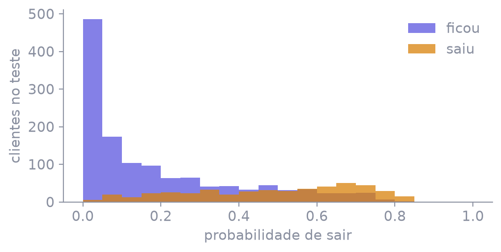

7.043 clientes · serviços, contrato e cobrança
1.869 saem — cerca de um em cada quatro
Na aula 1 havia três espécies e o interesse era acertar. Aqui são duas classes, e a acurácia mistura os dois erros num número só.
tenure.MonthlyCharges, TotalCharges, forma de pagamentocustomerID não entra. TotalCharges vem como texto e tem 11 células vazias. A conversão é leitura de tipo. A mediana que preenche o vazio fica no SimpleImputer, dentro do pipeline.No teste, a regra constante acerta 73,5% e pega zero de quem sai. Recall 0, precisão 0, nenhum alerta.

Não é a classe. Quem ficou (roxo) se amontoa à esquerda. Quem saiu (âmbar) se espalha para a direita, com sobreposição no meio — é aí que o corte decide.
| corte | alertas no teste | recall de quem sai | precisão |
|---|---|---|---|
| 0,3 | 663 | 0,767 | 0,540 |
| 0,5 | 390 | 0,525 | 0,628 |
| 0,7 | 123 | 0,193 | 0,732 |
Baixar o corte dispara mais alertas e pega mais de quem sai. Subir o corte faz o contrário. O mesmo modelo, três decisões.
| previsto: fica | previsto: sai | |
|---|---|---|
| real: fica | 1.149 acertou quem fica | 145 alertou à toa |
| real: sai | 222 deixou passar | 245 acertou quem sai |
467 saíram de verdade no teste. O corte 0,5 pegou 245 e deixou passar 222.
A acurácia neste corte é 0,792 — mais alta que a constante, e ainda deixa passar 222. A aula não usa curva ROC: o limiar já é a decisão.
| run | precisão | recall | F1 | acurácia |
|---|---|---|---|---|
| sem peso, corte 0,5 | 0,628 | 0,525 | 0,572 | 0,792 |
| peso balanceado | 0,518 | 0,801 | 0,629 | 0,750 |
| run | precisão | recall | F1 | acurácia |
|---|---|---|---|---|
| constante-fica | 0 | 0 | 0 | 0,735 |
| corte 0,3 | 0,540 | 0,767 | 0,634 | 0,765 |
| corte 0,5 | 0,628 | 0,525 | 0,572 | 0,792 |
| corte 0,7 | 0,732 | 0,193 | 0,305 | 0,767 |
| balanceada | 0,518 | 0,801 | 0,629 | 0,750 |
Com esse custo, a run que obedece é a de peso balanceado: recall 0,801, precisão 0,518. A acurácia dela perde para o corte 0,5 e quase empata com a constante.
Destino: Salvar como PDF. Margens: nenhuma. Gráficos de segundo plano: ativado.